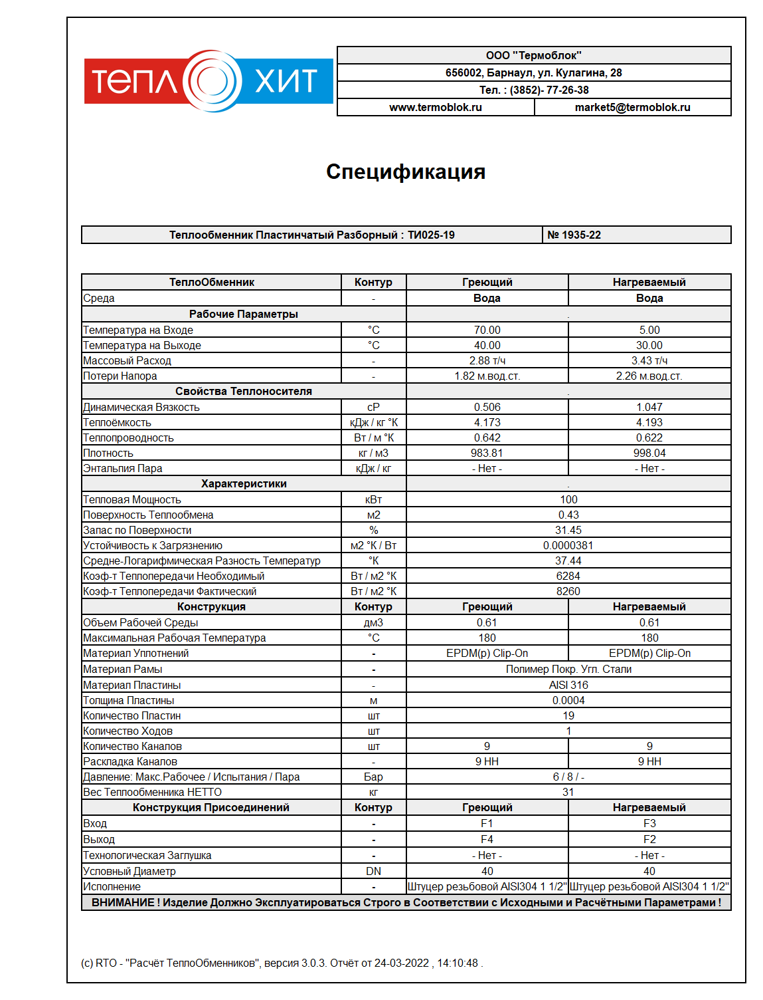

Обеспечивается постоянная циркуляция жидкости из бассейна по нагреваемому контуру.
Пример теплообменника на бассейн 15 м3 открытого типа 100 кВт. Теплообменники для бассейна пластинчатого типа подбираются индивидуально. Инженер по подбору рассчитает теплообменный аппарат необходимой мощности.
